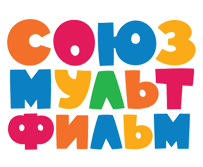

Старые cоветские мультики
«Союзмультфильм» — крупнейшая советская и российская государственная киностудия мультипликационных фильмов, основанная в Москве 10 июня 1936 года и действующая по настоящее время.
Полное наименование юридического лица — Федеральное государственное унитарное предприятие “Творческое производственное объединение "Киностудия «Союзмультфильм»"” (ФГУП “ТПО "Киностудия «Союзмультфильм»"”).
Является одним из учредителей Ассоциации анимационного кино России.
С 1946 года располагается по адресу: 127006, Россия, г. Москва, ул. Долгоруковская, дом 25 (в здании Церкви святого Николая Чудотворца).
За восемьдесят лет существования киностудии на ней создано более полутора тысяч мультфильмов в самых разных жанрах и художественных техниках, многие из которых вошли в «Золотой фонд» мировой анимационной классики и получили более четырёхсот международных фестивальных призов и наград.

Коллектив
Правление
Юлиана Слащёва (с 3 февраля 2017) — председатель правления
Антон Гришин (с 2017) — член правления Ассоциации анимационного кино
Николай Маковский (с 2017) — продюсер
Мария Смирнова (с 2017) — продюсер
Борис Машковцев (с 2017) — продюсер
Ольга Леонтьева (с 2017) — финансовый консультант
Директора
Дмитрий Константинович Зотов (1978—1986).
Эрнест Ахмедович Рахимов (1997—2004).
Акоп Гургенович Киракосян (2004—2009).
Тариэл Отарович Хателишвили (2010—2011).
Николай Людвигович Маковский (с 26 августа 2011 года по 6 марта 2014 года).
Валерий Геннадиевич Бакаев (с 7 по 27 марта 2014 года).
Андрей Добрунов (с 28 марта 2014 года по 13 апреля 2016 года).
Глеб Давыдов (исполняющий обязанности директора с 14 апреля 2016 года по настоящее время; до назначения работал первым заместителем директора).
Художественные руководители
Наталья Борисовна Дабижа (2008—2010)
Станислав Михайлович Соколов (2010—2013)
Михаил Владимирович Алдашин (2013—2016)
Ведущие режиссёры
Ведущими режиссёрами киностудии «Союзмультфильм» за все годы деятельности являются: И. П. Иванов-Вано, Л. К. Атаманов, М. М. Цехановский, Р. А. Качанов, Ф. С. Хитрук, Б. П. Степанцев, И. А. Ковалевская, А. Ю. Хржановский, Ю. Б. Норштейн, В. М. Котёночкин, А. А. Петров, Г. М. Сокольский и други